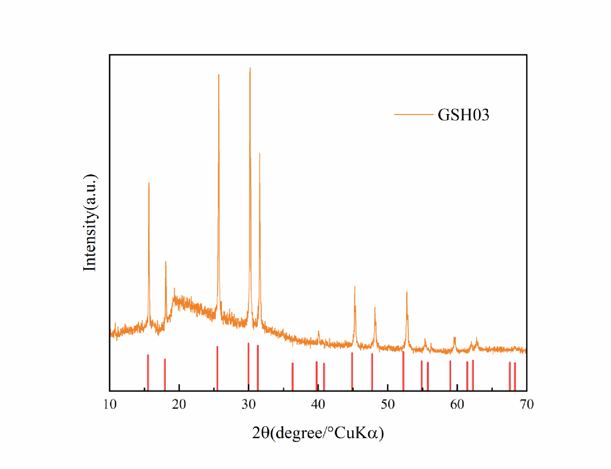

Solid-state electrolytes are often discussed as if they belong to one category, but sulfide, oxide, and halide materials behave very differently in practical battery development. Each family has different strengths in ionic conductivity, moisture stability, high-voltage compatibility, pellet pressing, cathode composite preparation, lithium-metal interface behavior, and scale-up processing.
Winigen Materials' solid-state electrolyte catalog includes oxide powders and slurries, LLZTO garnet-type oxide powder, argyrodite-style sulfide powders with controlled particle-size ranges, and Li3InCl6 halide powder with particle-size and conductivity data. The catalog is structured around practical screening variables such as particle size, conductivity, moisture, impurity data, SEM, and XRD where available.

Sulfide Solid Electrolytes
Sulfide solid electrolytes are attractive because they can deliver high room-temperature ionic conductivity and can often be densified by cold pressing. This makes them useful for early-stage pellet conductivity testing, composite cathode studies, and solid-state lithium battery research. Literature reviews highlight the high conductivity and mechanical compliance of sulfide solid electrolytes, while also emphasizing interface instability, air or moisture sensitivity, and the need for protective strategies.
Winigen's sulfide data illustrates this conductivity advantage. The Li5.5PS4.5Cl1.5, D50 2.06 µm product page lists a typical ionic conductivity of 8.54 mS/cm (conditions unspecified) by electrochemical workstation testing, 1.11 × 10⁻⁹ S/cm electronic conductivity, 5.90 ppm water, D10/D50/D90 particle-size data, ICP impurity data, and supporting representative PSD/XRD images.
Another sulfide example, Li5.5PS4.5ClxBr1.5-x, D50 >10 um, is listed with >12 mS/cm ionic conductivity under cold-pressed pellet conditions and ≤10-6 mS/cm electronic conductivity, showing why sulfides are often screened when high ionic transport is a priority.
Sulfides should not be selected by conductivity alone. Practical performance depends on moisture control, cathode-side stability, lithium-metal interface behavior, stack pressure, and particle-size selection. Air and moisture exposure can degrade sulfide electrolytes and may generate H2S, so handling protocol matters.
Best fit: high-conductivity screening, cold-pressed pellet studies, composite cathode development, lithium-metal interface research, and high-power solid-state battery concepts.



Oxide Solid Electrolytes
Oxide solid electrolytes are often evaluated because they can offer better chemical robustness and handling advantages compared with many sulfides. Oxide families such as LATP and LLZO/LLZTO are widely used in solid-state battery research, separator coatings, composite electrolyte studies, and cathode blending.
Winigen's oxide catalog includes multiple LATP particle-size grades and LATP slurry formats. The LATP D50 0.30 um, LATP D50 0.40 um, and LATP D50 0.65 um powders are listed with pressed-pellet ionic conductivity specifications of ≥0.55 mS/cm, ≥0.50 mS/cm, and ≥0.30 mS/cm, respectively, at 25 °C.
The LATP D50 0.30 um product page also includes a more complete data package: white powder appearance, particle-size measurement by laser particle-size analyzer, ≤500 ppm water, ≤500 ppb magnetic impurities, ≥0.55 mS/cm ionic conductivity, cathode-blending use-case guidance, and supporting SEM and XRD images.
LLZTO powder represents another important oxide category. Winigen lists it as a Ta-doped LLZO/garnet-type oxide solid electrolyte powder with customizable particle size, intended for garnet electrolyte screening, composite electrolyte studies, and coating development, with SEM and XRD images available. Garnet-type LLZO materials are widely studied because of their lithium-metal relevance, but literature also emphasizes interface engineering, grain-boundary effects, and processing challenges.
Compared with sulfides, oxides may be easier to handle, but they are usually more rigid and can require more demanding densification or interface engineering. This is why oxide materials are attractive for coatings, separators, composite electrolytes, or chemically robust architectures, but not always the easiest route for low-resistance full-cell contact.
Best fit: chemically robust electrolyte screening, separator or cathode coating, composite electrolyte studies, oxide ceramic development, and applications where handling stability is important.


Halide Solid Electrolytes
Halide solid electrolytes are increasingly studied because they may offer a useful balance between ionic conductivity, electrochemical stability, cathode compatibility, and processing behavior. Recent halide work describes these materials as promising for high-voltage all-solid-state batteries while still noting the importance of interface stability, moisture control, synthesis route, and cathode composite design.
A retired Winigen listing documented Li3InCl6 powder, D50 0.9 um, a halide solid electrolyte material for high-purity phase screening, EIS conductivity testing, and solid-state battery research. That historical listing reported D50 0.9 +/- 0.3 um, ≤500 ppm water, ≥1.5 mS/cm ionic conductivity, a measured value of 1.85 mS/cm at 25 °C after 40 min hold, ICP impurity limits, and XRD phase identification. Its documentation also included a particle-size distribution image with English axis labels. This grade is not a current supply offer; follow the category link for current materials and discuss halide requirements with Winigen.
Halides are especially interesting for cathode-side applications because many high-voltage oxide cathodes place severe oxidative stress on sulfide electrolytes. However, halides are not universal solutions. Their performance depends on cathode chemistry, electrolyte composition, moisture exposure, mechanical contact, and composite cathode design.
Best fit: high-voltage cathode compatibility screening, cathode composite studies, halide-based solid-state battery research, and applications where a balance of conductivity and oxidative stability is desired.

Practical Comparison
| Material Family | Typical Strengths | Common Challenges | Winigen Product Examples |
|---|---|---|---|
| Sulfide | High ionic conductivity, cold-press processability, useful for composite cathodes and Li-metal studies | Moisture sensitivity, interface instability, H2S handling concern, pressure/contact dependence | Li5.5PS4.5Cl1.5; Li5.5PS4.5ClxBr1.5-x; Li6PS5Cl |
| Oxide | Better chemical robustness, handling advantages, coating/separator/composite use | Rigid particles, densification challenges, grain-boundary/interface resistance | LATP powders, LATP slurries, LLZTO |
| Halide | Attractive cathode-side compatibility, balanced conductivity/stability, high-voltage interest | Material-specific moisture and interface behavior, less mature manufacturing base | Li3InCl6 |
Product Data Examples
| Product | Family | Particle Size | Conductivity | Other Data Available | Screening Relevance |
|---|---|---|---|---|---|
| LATP powder | Oxide | D50 0.30 +/- 0.05 um | ≥0.55 mS/cm, pressed pellet, 25 °C | Water ≤500 ppm; magnetic impurities ≤500 ppb; SEM and XRD | Particle-size-controlled oxide screening |
| LLZTO powder | Oxide | Customizable | Confirm by RFQ/grade | SEM and XRD; garnet electrolyte screening use case | Garnet/LLZO-type oxide example |
| Li5.5PS4.5Cl1.5 | Sulfide | D50 2.06 µm | Typical: 8.54 mS/cm ionic; 1.11 × 10⁻⁹ S/cm electronic; measurement conditions unspecified | Water 5.90 ppm; ICP impurities; representative PSD and XRD | High-conductivity sulfide example |
| Li6PS5Cl | Sulfide | D50 2.123 um | 3.5 mS/cm ionic; 1.74 x 10-6 mS/cm electronic | Water 43 ppm; ICP impurities; PSD and XRD | Argyrodite sulfide example |
| Li3InCl6 | Halide | D50 0.9 +/- 0.3 um | ≥1.5 mS/cm; measured 1.85 mS/cm at 25 °C | Water ≤500 ppm; ICP limits; XRD phase; PSD image | Halide/high-voltage-cathode screening example |
How to Choose a Solid Electrolyte Family
| Development Question | Good Starting Point |
|---|---|
| Need highest room-temperature ionic conductivity? | Start with sulfides |
| Need better air/handling robustness? | Start with oxides |
| Need high-voltage cathode-side compatibility? | Consider halides |
| Need coating or separator-layer development? | Consider LATP/LLZTO powders or slurries |
| Need composite cathode contact and cold pressing? | Consider sulfide powders with controlled D50 |
| Need cathode-side interphase engineering? | Consider halides or oxide/halide hybrid strategies |
| Need lithium-metal interface screening? | Compare sulfide, garnet oxide, and interlayer approaches under realistic pressure/current conditions |
What Data Should Be Compared Before Selection?
A serious solid-state electrolyte comparison should include more than chemistry name and conductivity. Important data include D10/D50/D90 particle-size distribution, ionic conductivity, electronic conductivity, water content, elemental impurities, XRD phase identification, SEM morphology, pellet density and pressing conditions, cathode compatibility, lithium-metal interface stability, slurry or coating compatibility, and handling/storage requirements.
This is why product-page characterization matters. Winigen's sulfide product pages include not only ionic conductivity, but also electronic conductivity, moisture data, ICP impurity data, particle-size distribution, and XRD images where available.
Bottom Line
Sulfide, oxide, and halide solid electrolytes each solve different parts of the solid-state battery problem. Sulfides are attractive for high conductivity and cold-pressed composite studies, but require careful moisture and interface control. Oxides offer handling and stability advantages, but often need more attention to densification, contact, and interface engineering. Halides are increasingly important for high-voltage cathode-side compatibility, but still require validation of moisture sensitivity, phase purity, and composite cathode behavior.
The best screening program selects the material family that fits the target cell architecture and development stage, rather than searching for one universally best family.
Winigen Materials supplies oxide, sulfide, and halide electrolyte materials, particle-size-controlled powders, and selected slurry formats, and provides characterization data and RFQ-based material matching for practical solid-state battery development.
References
- Zhang et al., Sulfide solid electrolytes for all-solid-state lithium batteries: Structure, conductivity, stability and application, Nano Energy, 2018.
- Famprikis et al., Fundamentals of inorganic solid-state electrolytes for batteries, Nature Materials, 2019.
- Wang et al., Challenges and perspectives of garnet solid electrolytes for all solid-state lithium batteries, Journal of Power Sources, 2018.
- Asano et al., Solid halide electrolytes with high lithium-ion conductivity for application in 4 V class bulk-type all-solid-state batteries, Advanced Materials 30, 1803075 (2018).
- Ren et al., Halide solid-state electrolytes for all-solid-state batteries: structural design, synthesis, environmental stability, interface optimization and challenges, Chemical Science, 2023.
All original diagrams on this page are © Winigen Materials unless otherwise noted. They may not be reproduced, modified, or redistributed without permission.